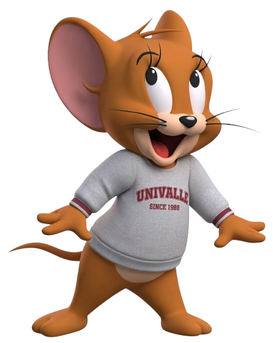
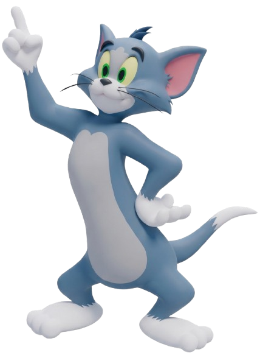
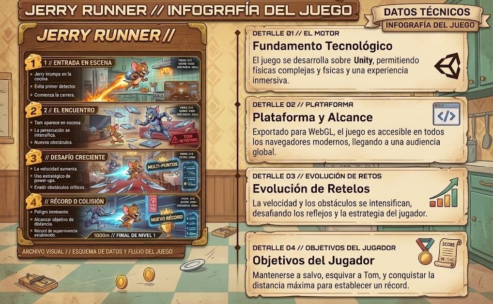

Bienvenido a mi Portafolio Web
Práctica integradora de desarrollo de videojuegos en Unity 6.6 con exportación WebGL. Explora los proyectos interactivos creados para esta unidad.

Jerry Runner

Tom & Jerry Pac-Man
Juego 1: Jerry Runner (3D)
Una trepidante carrera infinita donde el ingenio y la velocidad son la única clave para sobrevivir a la persecución de Tom.
Juego 2: Tom & Jerry Pac-Man
Laberinto clásico adaptado con mecánicas de persecución, recolección y escape dinámico en Unity WebGL.
Infografía del Proyecto
Diagrama técnico y arquitectura del desarrollo implementado en la Unidad 4.
